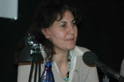

پذيرش > سایت نوشته ها > کمپین یک میلیون امضا دستاوردها و انتقادها
 سخنرانی رضوان مقدم در برلین سخنرانی رضوان مقدم در برلین

 کمپین یک میلیون امضا دستاوردها و انتقادها کمپین یک میلیون امضا دستاوردها و انتقادها
6 اسفند 1387 - تهیه - نسخه قابل چاپ
آخرین سخنران برنامه ای که" خانه فرهنگی دهخدا" روز جمعه بیست و پنجم بهمن ماه برگزار کرد،خانم "رضوان مقدم" بود.
رضوان مقدم از فعالان جنبش زنان ومدافعان حقوق بشر در ایران و از پیشگامان کمپین یک میلیون امضاست. او همچنین دبیر انجمن "تلاشگران سلامت" در ایران است که این انجمن برای پیشگری و گسترش ایدز و اعتیاد، تن فروشی ودیگر آسیب های اجتماعی فعالیت می کند.
بخش عمده سحنرانی رضوان مقدم را در اینجا میتوانید بخوانید و بخش هایی از سخنرانی اورا که موفق شدم ضبط کنم هم می توانید گوش کنید.
متن سخنرانی رضوان مقدم
بسیار متشکرم که آقای دکتر درویش پور به بحث های تئوری پرداخت و خانم مهاجر هم زحمت من را کم کرد و خیلی از مسایل را گفت و من دلیلی نمی بینم که مباحث را تکرار کنم. من انتقاداتی که به کمپین وارد شده است را مطرح می کنم و به زمینه پیدایش کمپین می پردازم. همچنین به خط قرمزهایی اشاره خواهم کرد که سناتورهای قبل از انقلاب و نمایندگان مجلس ملی آن زمان نمی توانستند درباره آن صحبت کنند، ولی ما در رژیم جمهوری اسلامی توانستیم درمورد این مسایل صحبت کرده و از آن عبور کنیم. ابتدا به انتقادات وارد به کمپین می پردازم، چون فکر می کنم همه شما کمپین را می شناسید و به اندازه کافی در این مورد بحث شده است.
انتقاداتی که در مورد کمپین مطرح می شود، این است که چرا کمپین به مسایل عمیق تر نمی پردازد؟ چرا مسئله حجاب را مطرح نکرده است؟ چرا مسئله همجنس گرایی را مطرح نکرده است؟ و مسایلی از این دست که ما تصور می کنیم همه این مسایل در ظرفیت حرکتی که آغاز کرده ایم، نمی گنجد و هر کدام از این مباحث باید برای خود کمپین جداگانه داشته باشد. به نظر من در همین حد که کمپین توانسته است قوانین تبعیض آمیز را مطرح کند، گام بسیار بسیار بزرگی در جامعه بوده است. در جریان دستگیری های 22 خرداد سال 85 در میدان هفت تیر، 71 نفر را بازداشت کردند و روزنامه ها نیز مسئله را پوشش داده بودند. وقتی در یک حرکت 300 نفر شرکت کنند و 71 نفر بازداشت شوند، یعنی یک چهارم شرکت کننده ها. من یادم هست که بعد از این جریان، ما نشستیم و در این مورد بحث کردیم که وقتی نمی گذارند به خیابان ها برویم، باید چکار کنیم؟ و تصمیم گرفتیم حرکت مسالمت آمیزتری را آغاز کنیم. بنابراین از بحث قوانین تبعیض آمیز شروع کردیم. بعضی دوستان می گفتند بحث ارث و دیه در قرآن مطرح شده و خط قرمز است، ولی ما گفتیم یا تمام قوانین تبعیض آمیز یا هیچ چیز. این گونه بود که وارد مسئله شدیم. همان طور که فریبا جان اشاره کرد، آن روزها بحث زیادی مطرح بود. اما می بینیم دو مسئله ای که بیش از هر چیز بر خط قرمز بودن آنها تاکید می شد، یعنی اول مسئله دیه و دوم مسئله ارث، وارد مجلس شد. اما چرا این مسایل مطرح شد؟ چون خواست جامعه بود و پرداختن به آن اجتناب ناپذیر.
وقتی یک مسئله به خواست جامعه تبدیل می شود، دیگر نمی توان در برابر آن مقاومت کرد. به عنوان مثال مگر زلزله بم اولین حادثه ای بود که در ایران اتفاق افتاد؟ مگر در گذشته زلزله طبس و رودبار رخ نداده بود؟ اما ما با آقایانی که به نوعی دست اندرکار قانونگذاری بودند وارد بحث شدیم (می گویم آقایان، چون در مملکت ما همه چیز دست آقایان است. حتی تعداد انگشت شماری از خانم ها که در کار قانونگذاری هستند و دست در حکومت دارند به نظر من به نوعی مرد هستند. ما آنها را خیلی در زمره زنان به حساب نمی آوریم، چون تفکر شان مردانه و مردسالارانه است). ما مطرح کردیم که وقتی زنی تمام زندگی اش را در زلزله بم از دست داده، خانه و باغ خرمای او از بین رفته است ( زن از درخت ارث می برد ولی از زمین ارث نمی برد). این زن باید چکار کند؟ تکلیف زنی که از زمین ارث نمی برد چیست؟ این مسایل واقعیتی انکارناپذیر است. مسئله ارث و دیه مطرح شد و من با بازجوی خود در زندان روی این دو موضوع بحث کردم. همان طور که فریبا جان می گوید، واقعا زن ها کار بسیار دشواری را آغاز کردند، در بازجویی ها و دادگاه عقب نشینی نکردند، با بازجو ها و خانم زندانبان نیز بحث کردند. من با بازجو وارد بحث می شدم که چرا باید ارث من نصف ارث برادرم باشد؟ بازجو جواب می داد که مرد نان آور خانه است. از او پرسیدم پس من چکاره خانواده هستم؟ در حالی که بیست و چند ساله بودم همسرم را اعدام کردید و حتی حساب کوچکی هم که از کار خود در آموزش و پرورش داشتم، مصادره کردید. خوب من یک زن بودم و چیزی هم نداشتم و با داشتن دو فرزند تلاش کردم و روی پای خود ایستادم. به من نشان بده که کدام مرد زندگی مرا تامین کرد؟ به او گفتم طبق آمار خود شما ( آماری که مطرح می کنم متعلق به سال 82 است و به طور قطع در حال حاضر افزایش یافته است) ما یک میلیون زن سرپرست خانوار داریم. شما می خواهید با اینها چکار کنید؟ مسئله دیه را هم مطرح کردم. من هم در مصاحبه های رادیویی و هم در بازجویی ها به کرات روی این مسئله انگشت گذاشتم که چرا من باید برای اتومبیل خود به اندازه مرد حق بیمه پرداخت کنم، اما زمانی که از نظر بدنی به من خسارت وارد شود، نصف مرد دیه دریافت کنم؟ درکدام بیمارستان، دکتر به من می گوید چون تو زن هستی، نصف خرج عمل را از تو می گیرم؟ کدام بیمارستان نصف هزینه یک تخت بیمارستانی را از من می گیرد؟
اینها واقعیت های عینی است که برای آن جوابی نداشتند. وقتی شما افراد را در مقابل یک واقعیت انکارناپذیر قرار می دهید، مجبور به تسلیم می شوند. این همه سال با این مسئله که مرد نان آور خانه است، سر زنان راشیره مالیدند. یا این که زن بیاید رای بدهد و مرد در مجلس حافظ منافع او باشد. چرا خود زن حافظ منافعش نباشد؟ چه نیازی است که مرد در مجلس حافظ منافع زن باشد؟ من می خواهم بگویم یکی از کارهایی بزرگی که کمپین انجام داد، شکستن این خط قرمزها بود. ما باید تاریخ بخوانیم و یادمان باشد جمله بسیار زیبای گاندی را که می گوید: « کسی که تاریخ نمی خواند، محکوم به تکرار آن است». اگر ما تاریخ بخوانیم، می بینیم چه اتفاقاتی بر ما گذشته است و از تجارب گذشتگان بهره می گیریم. چون آقای مهرداد درویش پور به مسایل تئوری پرداختند، من وارد این مقوله نمی شوم. ولی چرا و از ترس چه کسانی، نمایندگان مجلس شورای ملی قبل از انقلاب و سناتورهای مجلس سنا جرات نمی کردند وارد بعضی مباحث، از جمله مسئله ارث شوند؟ از ترس روحانیت. اما چرا اکنون می بینیم که این مسایل در مجلس شورای اسلامی به عنوان یک ضرورت روز مطرح می شود؟ چون جمهوری اسلامی میخواهد خود را حفظ کند. چون خود را در مقابل نیمی از جمعیت ایران می بیند. زنان محکم به خاطرخواست های خود ایستاده اند. خاطره ای را تعریف کنم: 33 نفر بودیم و آن روز رفته بودیم تا از دوستانمان حمایت کنیم، از جمله فریبا جان که اکنون این جا حضور دارد. ما را گرفتند و به کمیته خیابان وزراء بردند. آن جا خانمی بود که درجه افسری داشت و به زنانی که آن جا بودند توهین کرد. من به او گفتم خانم محترم این به ضرر شما است که این طور با ما صحبت می کنید. تمام زنانی که اینجا می بینید نویسنده، مترجم، استاد دانشگاه، حقوقدان و روزنامه نگار هستند و شما حق توهین به ما را ندارید. او گفت اگر شما روزنامه نگار، استاد دانشگاه و حقوقدان هستید، اینجا چکار می کنید؟ گفتم این مسئله را باید از بالاتر خود سوال کنی و از کسانی که ما را به اینجا آورده اند. به او گفتم هر گونه بدرفتاری که با ما انجام دهید، وقتی از اینجا بیرون برویم اسم شما را یاد می کنیم. کمیته خیابان وزراء جایی است که افرادی را به آنجا می برند که رفتارهای آنها در جامعه از نظر جمهوری اسلامی جرم محسوب می شود. ما را هم برده بودند آنجا. من می خواهم بگویم ما آنجا چکار کردیم. آنجا پنج شش نفر خانم هایی بودند که باتوم داشتند و همه زیر چادرهایشان بود. من به یکی از آنها گفتم که ما به خاطر حقوق شما اینجا هستیم. او به خشونت گفت اگر من نخواهم شما از حق من دفاع کنید، چه کسی را باید ببینم؟ به او گفتم منظورم از شما، شمای نوعی است و منظور من زن ایرانی است. ابتدا مقاومت کرد ولی بعد حاصل بحث این شد که این چند نفر خانوم باتوم به دست، همه باتوم ها را روی میز اتاق کنفرانس گذاشته بودند و همگی به حرف های ما گوش می دادند و ما در مورد قوانین مطرح شده در کمپین صحبت کردیم . من از یکی از خانم ها پرسیدم، فکر کن به خانه رفته ای و همسرت با یک زن دیگر آمده و می گوید این همسر دوم من است. چیکار می کنی؟ گفت هر دو را می کشم. به او گفتم تو حق نداری هر دو را بکشی. ما می گوییم این قوانین باید تغییر کند، چون اگر هر کسی شوهر خود و زن دوم او را بکشد، مملکت پر از قاتل می شود. زمانی که مسئله خودشان مطرح می شود، دیگر نمی توانند تحمل کنند. خاصیت حرکت چهره به چهره، عینی کردن مسایل است. این کار کوچکی نیست.
اینجا ما می بینیم که دوستان عزیز و روشنفکر، ما را زیر ضرب و انتقاد می برند که حرکت شما یک حرکت رفرمیستی است و باعث ثبات جمهوری اسلامی می شود. می گویند وقتی این قوانین تغییر کند، مردم راضی می شوند و دیگر حکومت تغییر نمی کند. جالب است که بعضی ها این طرف ما را متهم می کنند که باعث تثبیت حکومت می شویم و از آن طرف حکومت ما را متهم می کند که آمریکایی هستیم و برانداز نرم یا برانداز مخملی و از این جور اتهامات. مسئله ای را که آقای درویش پور مطرح کرد، مسئله گذشته زنان است، از جمله حرکتی که قره العین انجام داد.
من می خواهم به یک موضوع تاریخی اشاره کنم. شاید خیلی از شما ندانید که چه کسی خانم قره العین را زیر ضرب قرار داد. کدام از مردان تاریخ کشورمان؟ مردی که بسیار برای او احترام قایل هستیم، یعنی امیرکبیر و ما همیشه در تاریخ به نیکی از او یاد می کنیم. ببینید چطور وقتی تاریخ توسط مردان نوشته می شود، زنان نادیده گرفته می شوند و مردان بزرگ و والامقام انگاشته می شوند. زنان در جنبش مشروطیت برای دفاع از حقوق خود مبارزه می کنند و وقتی از گرده این زنان مردانی مانند آقای مدرس وارد مجلس می شود، می گوید: « خداوند این قدر به زنان عقل و شعور نداده است که حاکم بر سرنوشت خود باشند. پدران و برادران آنها منافع آنها را تامین می کنند.» اینها مذاکرات مجلس دوم است. البته تاریخ دقیق آن یادم نیست، خصوصا وقتی نیم ساعت قبل از سخنرانی مسئله را به آدم خبر می دهند فرصت نیست تاریخ ها را بررسی کرد.
ما در تاریخ مسایلی داریم که باید در حرکت های اجتماعی به آن بپردازیم و باید به طور عمیق آنها را بخواینم. باید بدانیم در کجا قرار داشته ایم و اکنون در کجا قرار داریم و سپس انتظاراتمان را از یک حرکت اجتماعی بیان کنیم که تا این اندازه تاثیرگذار بوده است. باید دید ماهیت کمپین چیست، نیروی آن چقدر است و کسی که انتقاد می کند خود چه حرکتی انجام داده است.
یکی از خاطراتی که میخواهم درباره جمع آوری امضا در برلین برای شما دوستان بگویم ، به همین یکهفته پیش مربوط می شود .من همراه با یکی از دوستانم ، خانم گیتی دریکی از فروشگاههای برلین بودیم که به یک خانواده ایرانی برخوردکردیم. یک آقا و دو خانمی که همراه او بودند. وقتی که درباره کمپین یک میلیون امضا برای آنها توضیح دادم وبه آنها گفتم که اگر مایل هستند برگه های بیانیه را امضا کنند، آقایی که همراه آنها بود شروع به اعتراض کرد و از جمله گفت که جامعه ایران یک جامعه مردسالاراست و تغییری هم درآن نمیشود داد. اما وقتی که خانم ها خواستند برگه هارا امضا کنند ، با اشاره سر به آنها فهماند که امضا نکنند. در حقیقت می خواهم بگویم که علیرغم برخی صحبت هایی که بعضی از مردهای ما می کنند ، ولی اعتقادی به آزادی وتغییرندارند واز اینکه زنها را همیشه در کنترل خود داشته باشند، راضی هستند. تعجب من بیشتر اما ازاین بود که این اتفاق در میان چند ایرانی روی داد که در اروپا زندگی میکنند و با مسئله آزادی وبرابری زنها آشنا هستند.
مسئله دیگری که مطرح می کنند، مسئله حجاب است. افرادی که به این اعتراض دارند که چرا کمپین حجاب را مطرح نمی کند، خودشان یک کمپین ضد حجاب راه بیاندازند. منتظر چه هستند؟ این دفعه آنها اقدام کنند و ما آنها را همراهی خواهیم کرد. البته مسئله ضرورت دارد، زیرا مطابق اعلامیه حقوق بشر، حق انتخاب پوشش حق هر انسانی است. از ابتدایی ترین حقوق انسان، حق انتخاب پوشش است. یک کمپین «حق پوشش اختیاری» راه اندازی شود. نمی خواهد بگوییم کمپین «ضد حجاب» چون این هم می شود دیکتاتوری و انکار دموکراسی.
یک عده دوست دارند حجاب را انتخاب کنند. ما کاری نداریم که خانمی بخواهد چادر سر کند. اما من نمی خواهم کسی به من تحمیل کند که چادر سر کنم، بنابراین از این حرکت حمایت می کنم.
تهیه
ارسال به
بالاترین
،
توییتر
،
فریندفید
،
فیسبوک
در همين بخش :
 یک خبر تلخ؟ یک قانونشکنی؟ یک تصمیم بخشنامهای جدید؟ یک خبر تلخ؟ یک قانونشکنی؟ یک تصمیم بخشنامهای جدید؟
چرا بایست به سکسوالیته پرداخت؟ / نفیسه آزاد
آزارجنسی خانگی؛ «قربانی» نه، «نجات یافته»
زنان، بزرگترین بازندگان بهار عرب
سانسور از دیدگاه جنسیتی/الهه امانی
ديگر بخش ها :
طرح یک میلیون امضا
|
مقالات
|
سایت نوشته ها
|
اخبار
|
گزارش كمپين
|
گفت و گو
|
علیه سکوت
|
كوچه به كوچه
|
نامه های شما
|
گزارش ویژه
|
گفتگو با اعضا
|
ویژه سالگرد کمپین
|
تصویر برابری
|
دل آرام علی
|
تریبون
|
مقالات
|
تاریخ شفاهی
|
خارج از چارچوب
|
کتابخانه
|
درباره کمپین
|
کمپین در شهرها
|
کمپین در بند
|
صدای تغییر
|
ویژه 22 خرداد
|
لایحه حمایت از خانواده
|
گالری
|
عشا مومنی
|
امیر یعقوبعلی
|
خدیجه مقدم
|
راحله عسگری زاده و نسیم خسروی
|
پروین اردلان،جلوه جواهری، مریم حسین خواه، ناهید کشاورز
|
زینب پیغمبرزاده
|
سعیده امین، سارا ایمانیان، محبوبه حسین زاده، ناهید کشاورز و همایون نامی
|
احترام شادفر
|
نسیم سرابندی زاده،فاطمه دهدشتی
|
وبلاگ مهمان
|
پرونده خرم آباد
|
دستگیری ها
|
مریم مالک
|
پرستو اللهیاری
|
مهرنوش اعتمادی
|
سمیه رشیدی
|
Other Languages
|
همراهان
|
«فراخوان کمپین ده روز با بهاره هدایت»
| English
|